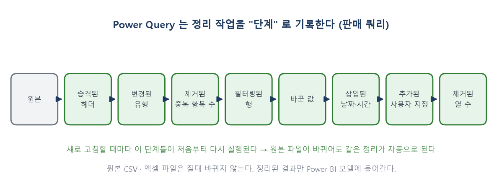
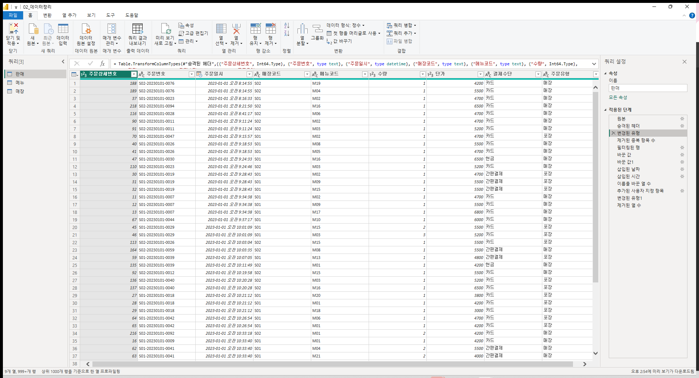
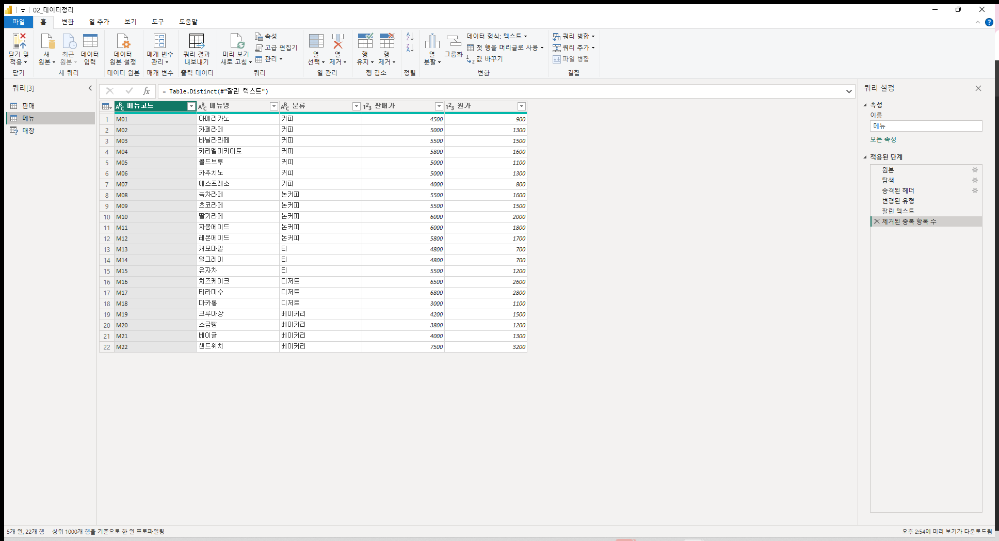
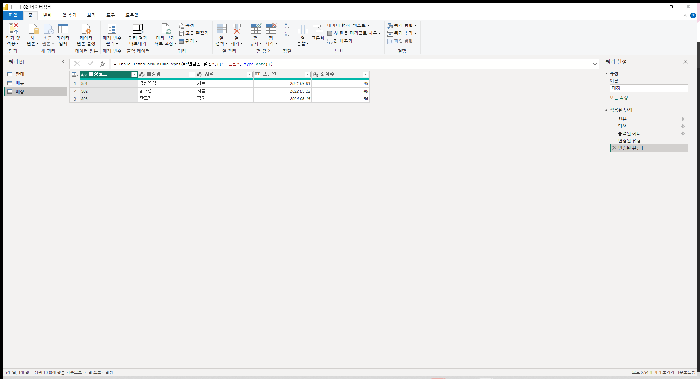
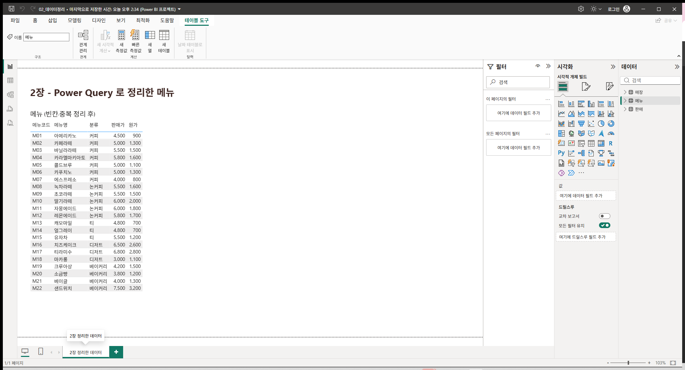

2장. Power Query 로 데이터 정리하기
학습 목표
- Power Query 편집기를 열고 화면 구성을 안다.
- 중복 행 제거, 빈 값 거르기, 값 바꾸기, 공백 제거로 지저분한 데이터를 정리한다.
- 날짜·시간을 나누고, 계산된 열(매출액)을 추가하고, 필요 없는 열을 지운다.
- "적용된 단계" 가 무엇이고 왜 편리한지 설명할 수 있다.
2-1. 왜 정리부터 해야 할까
1장에서 본 판매 데이터에는 문제가 있었다.
| 문제 | 그대로 두면 |
|---|---|
| 똑같은 줄이 두 번 들어간 중복 행 (40줄) | 매출이 실제보다 크게 나온다 |
| 수량이 빈 줄 (30줄) | 매출 계산이 틀리거나 빈칸이 생긴다 |
결제수단이 카드 / 신용카드 / CARD 로 섞임 |
결제수단별 차트에 카드가 세 덩어리로 나뉜다 |
메뉴명 앞뒤의 빈칸 (바닐라라떼) |
같은 메뉴가 다른 메뉴처럼 보인다 |
| 메뉴 표의 중복 (콜드브루 두 번) | 3장에서 관계를 만들 때 오류가 난다 |
데이터 분석 시간의 절반 이상은 이런 정리에 쓴다는 말이 있다. Power BI 에서는 이 일을 Power Query 가 맡는다.
2-2. Power Query 편집기 열기
1장의 내카페.pbix 를 열고 리본 홈 → 데이터 변환 을 누른다. 새 창으로 Power Query 편집기가 열린다.

| 부분 | 하는 일 |
|---|---|
| 왼쪽 쿼리 목록 | 불러온 테이블 하나가 쿼리 하나 (판매, 메뉴, 매장) |
| 가운데 미리 보기 | 처음 1,000줄 정도를 보여 준다. 열 머리글을 눌러 열을 고른다 |
| 위쪽 수식 입력줄 | 지금 단계가 하는 일을 M 이라는 언어로 보여 준다 (읽기만 해도 된다) |
| 오른쪽 적용된 단계 | 지금까지 한 작업이 순서대로 기록된다 |
수식 입력줄이 안 보이면 Power Query 편집기의 보기 탭에서 수식 입력줄 을 체크한다.

적용된 단계가 Power Query 의 핵심이다. 한 작업이 단계 하나가 되고, 단계를 누르면 그 시점의 데이터를 볼 수 있다. 잘못한 단계는 왼쪽의 ✕ 로 지우면 된다. 그리고 새로 고침할 때마다 이 단계들이 처음부터 자동으로 다시 실행된다. 다음 달에 새 CSV 가 와도 정리 작업을 다시 할 필요가 없다.
2-3. 판매 쿼리 정리하기
왼쪽 쿼리 목록에서 판매 를 고른다. 오른쪽 적용된 단계에는 이미 원본, 승격된 헤더, 변경된 유형 세 단계가 있다. 불러올 때 Power BI 가 자동으로 한 일이다.
| 자동 단계 | 하는 일 |
|---|---|
| 원본 | CSV 파일을 읽는다 |
| 승격된 헤더 | 첫 줄(주문번호, 주문일시 …)을 열 이름으로 올린다 |
| 변경된 유형 | 열마다 데이터 형식(정수, 텍스트, 날짜/시간)을 정한다 |

① 중복 행 제거
- 미리 보기의 아무 셀이나 누른 뒤 Ctrl+A 로 모든 열을 고른다. (열 머리글이 모두 초록색이 된다)
- 홈 → 행 제거 → 중복된 항목 제거.
단계 제거된 중복 항목 수 가 생긴다. 모든 열의 값이 똑같은 줄을 하나만 남긴다. (주문상세번호까지 같으니 진짜 중복이다)
열 하나만 고른 채 중복을 제거하면 그 열 기준으로 지운다. 예를 들어 주문번호 열만 고르면 메뉴가 여러 개인 주문의 줄까지 지워져 버린다. 무엇을 골랐는지 꼭 확인하자.
② 수량이 빈 행 거르기
- 수량 열 머리글의 ▾ 를 누른다.
- 목록에서 (null) 의 체크를 끈다. (안 보이면 아래쪽 추가 로드 를 누른다) → 확인.
단계 필터링된 행 이 생긴다. null 은 "값이 없음" 을 뜻한다.
③ 결제수단 표기 통일 (값 바꾸기)
- 결제수단 열 머리글을 눌러 고른다.
- 변환 → 값 바꾸기. 찾을 값
신용카드, 바꿀 항목카드→ 확인. - 한 번 더 값 바꾸기. 찾을 값
CARD, 바꿀 항목카드→ 확인.
단계 바꾼 값, 바꾼 값1 이 생긴다. 결제수단 ▾ 를 눌러 보면 이제 간편결제, 카드, 현금 세 가지뿐이다.
④ 주문일시를 날짜와 시로 나누기
나중에 "날짜별", "시간대별" 로 분석하려면 날짜와 시(0~23)가 따로 있어야 편하다.
- 주문일시 열을 고른다.
- 열 추가 → 날짜 → 날짜만. 맨 오른쪽에
날짜열이 생긴다. - 다시 주문일시 열을 고르고 열 추가 → 시간 → 시.
시열이 생긴다. - 새 열 머리글을 두 번 눌러 이름을 바꾼다:
날짜→ 주문일자,시→ 주문시.
열 추가 탭의 단추는 원래 열을 그대로 두고 새 열을 만든다. 같은 이름의 변환 탭 단추는 원래 열을 바꿔 버린다. 지금은 열 추가를 써야 한다.
⑤ 매출액 열 만들기 (사용자 지정 열)
판매 데이터에는 "얼마어치 팔았나" 가 없다. 수량 × 단가로 만든다.
- 열 추가 → 사용자 지정 열.
- 새 열 이름
매출액, 사용자 지정 열 수식에[수량] * [단가]를 입력한다. (오른쪽 목록의 열 이름을 두 번 누르면[수량]처럼 자동으로 들어간다) - 확인. 매출액 열 머리글 왼쪽의 형식 아이콘(ABC123)을 눌러 정수 로 바꾼다.
⑥ 필요 없는 열 제거
주문상세번호 는 중복을 찾을 때만 필요했고, 주문일시 는 주문일자·주문시로 나눴으니 더는 필요 없다.
- 주문상세번호 를 누르고 Ctrl 을 누른 채 주문일시 를 누른다.
- 홈 → 열 제거.
필요 없는 열을 지우면 .pbix 파일이 작아지고 보고서가 빨라진다. 특히 주문일시처럼 값이 거의 모두 다른 열은 용량을 많이 차지한다. 이 정리로 완성 파일 크기가 절반 이하로 줄었다.
판매 쿼리의 적용된 단계는 이렇게 된다.
원본
승격된 헤더
변경된 유형
제거된 중복 항목 수
필터링된 행
바꾼 값
바꾼 값1
삽입된 날짜
삽입된 시간
이름을 바꾼 열 수
추가된 사용자 지정 항목
변경된 유형1
제거된 열 수
단계 이름은 Power BI 버전에 따라 조금 다를 수 있다. 이름보다 순서와 결과가 같은지 확인하자.
2-4. 메뉴 쿼리 정리하기
- 왼쪽에서 메뉴 쿼리를 고른다.
- 메뉴명 열을 고르고 변환 → 서식 → 공백 제거. 앞뒤 빈칸이 사라진다 (단계
잘린 텍스트). - Ctrl+A 로 모든 열을 고르고 홈 → 행 제거 → 중복된 항목 제거. 23줄이 22줄이 된다.

엑셀에서 불러온 메뉴·매장 쿼리에는
원본다음에탐색단계가 하나 더 있다. 엑셀 파일 안에서 어느 시트를 쓸지 고르는 단계다 (1장 탐색 창에서 고른 것).
2-5. 매장 쿼리 - 형식 바꾸기
오픈일 열은 엑셀에서 날짜/시간(2021-05-01 오전 12:00:00)으로 들어왔다. 시각은 필요 없으니 오픈일 머리글의 형식 아이콘을 눌러 날짜 로 바꾼다.

2-6. 닫기 및 적용
홈 → 닫기 및 적용 을 누르면 편집기가 닫히고, 정리한 결과로 데이터를 다시 불러온다. 테이블 보기에서 판매가 360,400개 행(= 360,470 − 중복 40 − 빈 수량 30)인지 확인하자.
보고서 페이지에는 정리한 메뉴를 표로 올려 확인해 두었다.

원본 파일은 바뀌지 않는다. Power Query 는 원본 CSV·엑셀을 고치지 않는다. 읽어 온 다음 정리해서 Power BI 안에만 넣는다. 그래서 언제든 단계를 고치거나 지워서 되돌릴 수 있다.
정리
- Power Query 편집기: 홈 → 데이터 변환. 작업은 적용된 단계로 기록되고 새로 고침 때마다 다시 실행된다.
- 행 정리: 중복된 항목 제거(Ctrl+A 로 모든 열), 필터로 (null) 제거.
- 값 정리: 값 바꾸기, 공백 제거, 형식 바꾸기.
- 열 만들기: 열 추가 탭(날짜만, 시, 사용자 지정 열). 필요 없는 열은 지운다.
- 끝나면 닫기 및 적용.
확인 문제
- 중복을 제거할 때 주문번호 열만 고르고 중복된 항목 제거를 하면 어떤 문제가 생기는가?
- 적용된 단계에서
바꾼 값단계를 누르면 결제수단 목록에 무엇이 남아 있는가? 그 이유는? - 사용자 지정 열 수식을
[수량] + [단가]로 잘못 썼다. 고치는 방법을 쓰시오. (힌트: 단계 오른쪽의 톱니바퀴) - 2-6 에서 판매가 360,400개 행이 아니라 360,430개 행이 나왔다. 어느 단계를 빠뜨렸을까?